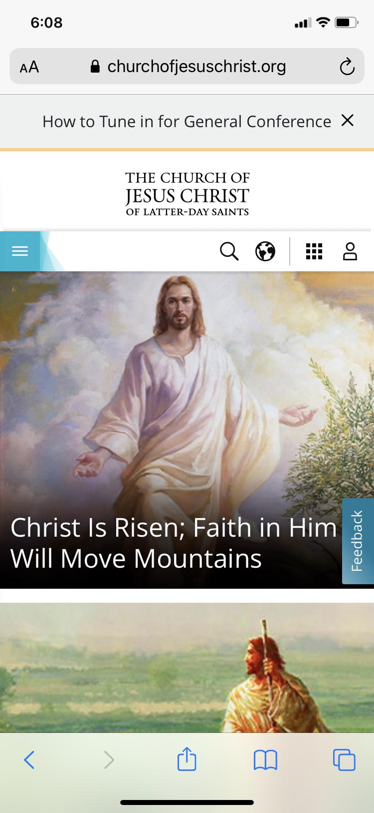
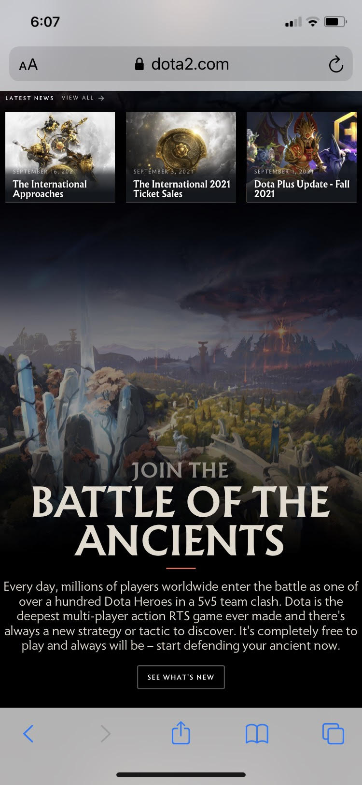

Design Principles
Alignment
Education | BYU-Idaho
Alignment is the arranged placement of the design elements on a page. As you notice on the BYUI Page that all 4 boxes are aligned and evenly spaced apart. The same goes for the 2 boxes at the bottom of the page where they are spilt in seperate but even spaced rows.
Link: byui.edu
Repetition
Religious Org | Church of Jesus Christ of Latter-day Saints
Repetition is essentially unity within a desing, where the user can see a common theme. As you can see that a common color theme that you can notice is light blue and white. You can also notice that the same shapes are used for the pictures you see, as well as share a common them of the savior.
Link: churchofjesuschrist.org
Contrast
Game | DOTA 2(Defence of the Ancients)
Contrast is when you use diversity in color, shapes, and sizes to catch the users attention. As you can see on this website that there is a huge difference between the black background color and the white lettering. The Letters as well vary from size to size from large font to tiny font size.
Link: dota2.com